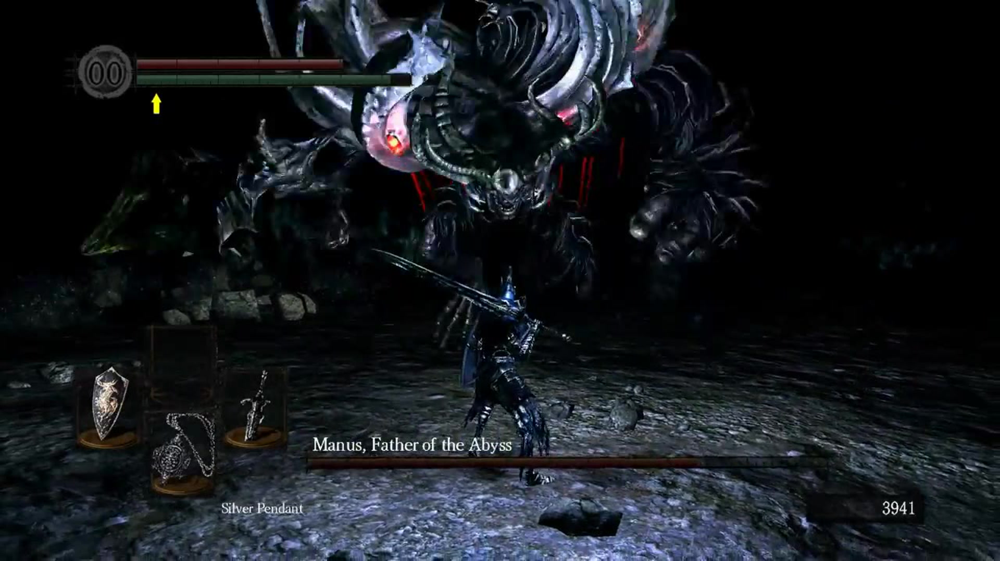

Jefes
Un jefe es un enemigo poderoso y que no reaparece. Los jefes se distinguen de los enemigos normales ya que su nombre y salud son mostrados en la parte inferior de la pantalla y, normalmente, se encuentran más allá de una puerta de niebla blanca. Siendo estos los que suponen los enemigos principales de cada zona del juego, ya sea para conseguir algo que necesitemos para avanzar o porque no tenemos otro camino. A pesar de que el jugador generalmente termina enfrentando a todos los jefes, no hace falta derrotarlos a todos para terminar el juego. Además de los jefes, hay varios enemigos que tampoco reaparecen después de morir y se les suele llamar minijefes.
Batalla contra Manus, padre del abismo.